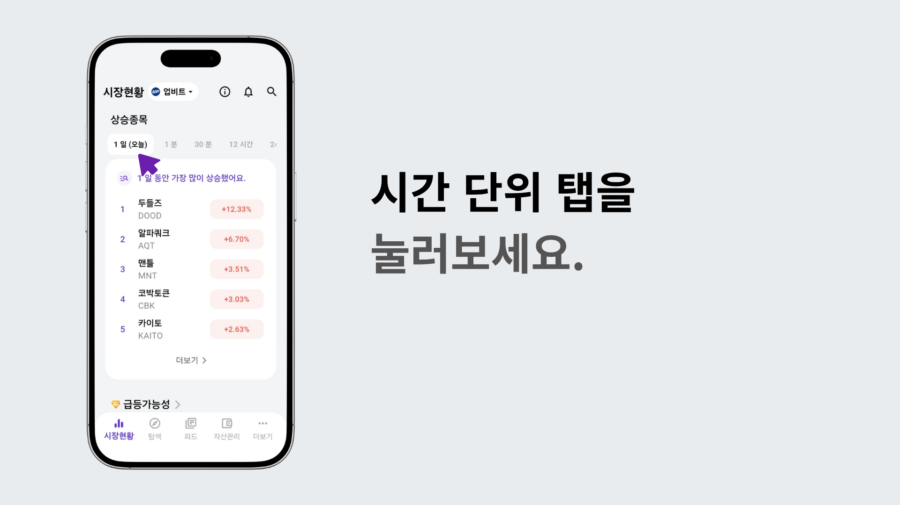

시간 단위 탭들을 누르면 시간대별로 가장 많이 상승한 탑 파이브 종목들을 확인할 수 있습니다.
더 많은 정보를 보고 싶으시면 더보기를 누르면, 현재 설정 그대로 탐색 탭으로 이동합니다.
탐색 탭에서 페인트 아이콘을 누르면, 색으로 강조하거나 제외할 수 있습니다.

편집 아이콘을 누르면 항목 편집이 되는데요, 변동률 아이콘을 클릭합니다.

변동률 메뉴의 고급 설정에서 원하는 기간을 설정할 수 있습니다.

고급 설정 탭에서는 예를 들어 4분 동안 가장 많이 오른 코인처럼, 나만의 세부 조건으로 탐색이 가능합니다.

설정을 마쳤으면 체크 아이콘을 눌러 완료합니다.
이제, 4분 동안 가장 많이 오른 종목부터 가장 많이 떨어진 종목까지 순서대로 확인할 수 있습니다.

이 기능을 활용하면 단기간 급등 종목을 빠르게 포착할 수 있습니다.